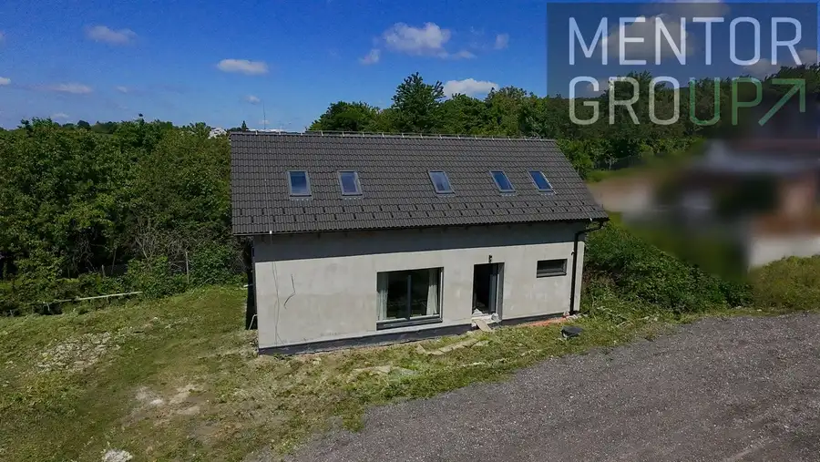
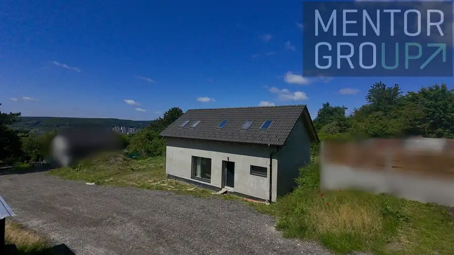
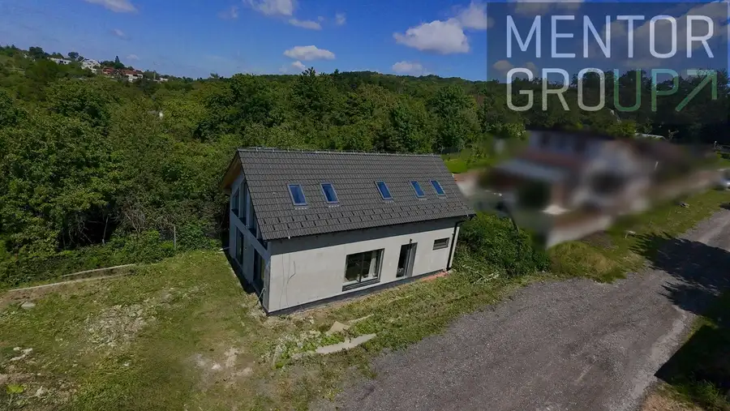
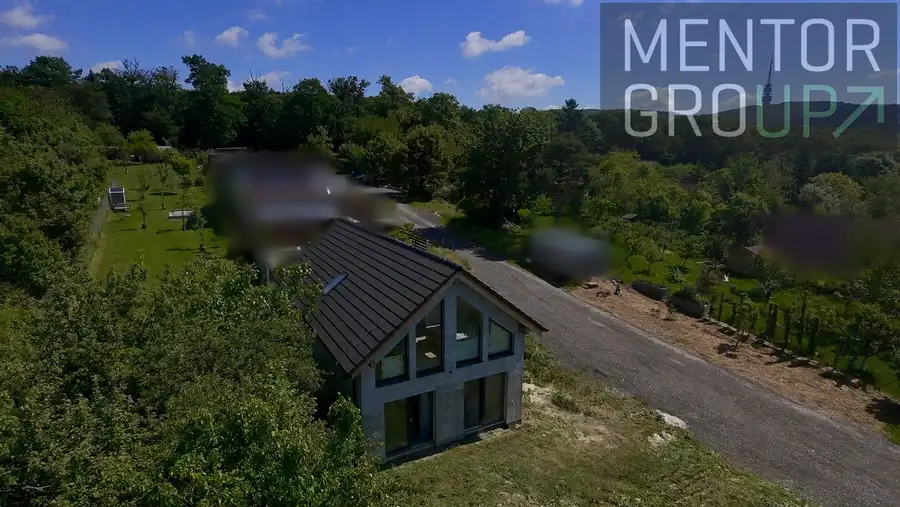
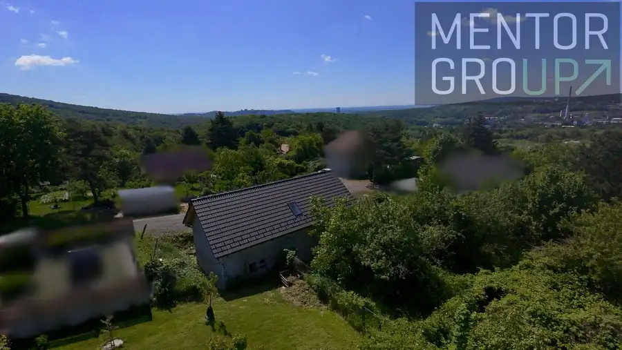
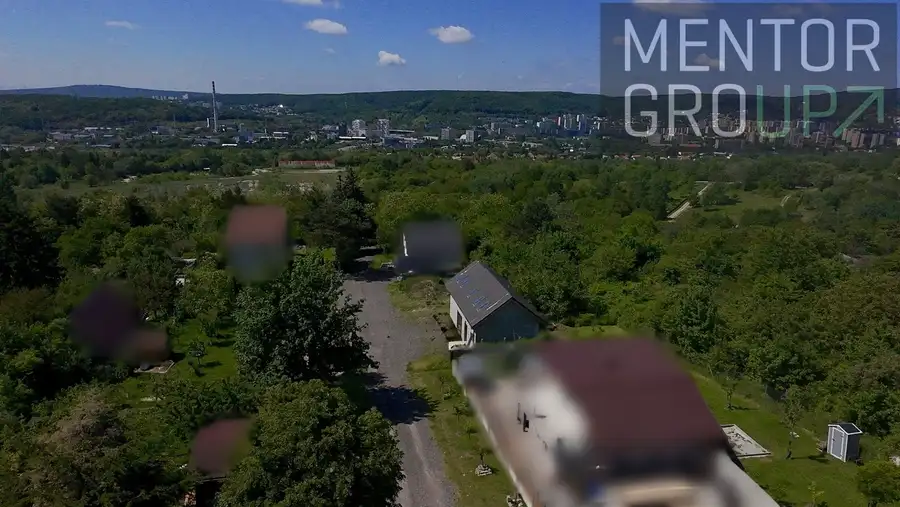
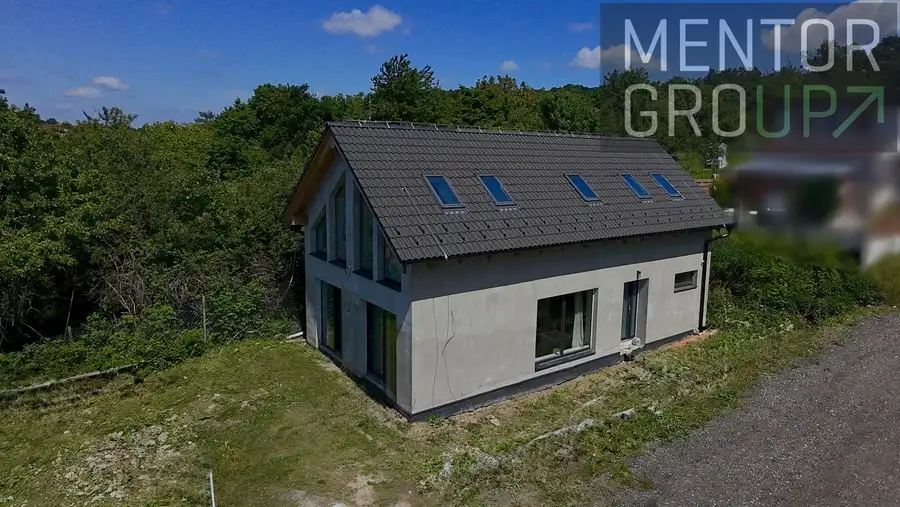

Novostavba nízkoenergetického rekreačného domu (s atribútmi rodinného domu) – Bratislava IV (Lamač)
Lamač, Bratislava








- Plocha112 m²
- StavNovostavba
- VlastníctvoOsobné
O nehnuteľnosti
Ponúkame na predaj rozostavaný 3,5 izbový rekreačný dom (s charakterom rodinného domu) s právoplatným stavebným povolením a právoplatnou zmenou stavby pred dokončením, situovaný vo vyhľadávanej a tichej lokalite Zlatá Hora v mestskej časti Bratislava - Lamač. Nehnuteľnosť sa predáva v štádiu uzavretej hrubej stavby s kompletnou projektovou dokumentáciou, čo novému majiteľovi poskytuje ideálnu príležitosť na dokončenie interiéru podľa vlastných potrieb a dizajnových preferencií.ZÁKLADNÉ PARAMETRE NEHNUTEĽNOSTI:Lokalita: Bratislava IV – Lamač, záhradkárska osada Zlatá HoraPrávny status: Možnosť zriadenia trvalého pobytu (lokalita je plne urbanizovaná, susedné nehnuteľnosti vykazujú všetky atribúty rodinných domov a sú celoročne obývané)Štádium predaja: Uzavretá hrubá stavba.Inžinierske siete: Stavba je pripojená k vode a elektrickej sieti.TECHNICKÝ STAV A STUPEŇ DOKONČENIA:Stavba bola realizovaná z kvalitných materiálov s dôrazom na konštrukčnú presnosť. Aktuálny stav zahŕňa:Výplne otvorov: Kompletne osadené okná a vstupné dvere (objekt je kompletne uzavretý a chránený pred poveternostnými vplyvmi). Dom je zateplený 15cm EPS a na 2NP sú realizované sadrokartónové podhľady.Sanita: Kompletne zrealizované rozvody vody a elektriky / príprava pre kúpeľňu a toaletu.Technológie: Projektová dokumentácia uvažuje s moderným a energeticky úsporným podlahovým vykurovaním napojeným na tepelné čerpadlo.Predmety dokončenia (v réžii nového majiteľa):- realizácia vnútorného schodiska prepojujúceho jednotlivé podlažia- inštalácia zdroja tepla (teplovodné podlahové rozvody + tepelné čerpadlo)- finálne interiérové úpravy (stierky, podlahy, sanita, interiérové dvere).DISPOZIČNÉ RIEŠENIE:1NP:- vstupná chodba - 12,85 m2- obývacia izba s kuchyňou - 33,48 m2- kúpeľňa - 4,50 m2- technická miestnosť - 5,34 m22NP:- hala - 10,05 m2- izba - 14,38 m2- šatník - 4,97 m2- kúpeľňa - 7,12 m2- izba - 15,27 m2- šatník - 4,54 m2INVESTIČNÝ POTENCIÁL A LOKALITA:Nehnuteľnosť sa nachádza v uzavretej, súkromnej ulici, vďaka čomu si nový majiteľ môže vychutnávať ticho ako v lese. Zároveň sú tu prekrásne výhľady. Lokalita Zlatá Hora predstavuje prestížnu a pokojnú adresu v tesnej blízkosti prírody, no s vynikajúcou infraštruktúrou a dostupnosťou do centra mesta (rýchle napojenie na diaľničný obchvat, blízkosť nákupného centra Bory Mall). Zároveň je to odtiaľto iba 10 minút peši na Železnú studničku. Na pozemku vedia pohodlne zaparkovať 4 automobily. Vzhľadom na to, že trhové ceny dokončených rodinných domov v tejto lokalite dosahujú úroveň 1 000 000 €, predstavuje táto ponuka výnimočnú investičnú príležitosť s vysokým potenciálom zhodnotenia.CENA A FINANCOVANIE:Kúpna cena: 289.000€Cena zahŕňa kompletný právny servis, vypracovanie kúpno-predajných zmlúv a poplatky spojené s prevodom vlastníckych práv na katastri nehnuteľností. V prípade záujmu o detailnejšie technické informácie, nahliadnutie do projektovej dokumentácie alebo dohodnutie termínu obhliadky ma, prosím, kontaktujte.🎥 Virtuálna prehliadkahttps://my.matterport.com/show/?m=YeB3H5kGwFV----------------------Filip Kühtreiber☎ 0911 470 450✉ filip.kuhtreiber@mentorgroup.sk✔ virtuálna prehliadka nehnuteľnosti✔ sprostredkovanie najvýhodnejšej hypotéky✔ kompletný realitný servisPlánujete predať alebo prenajať nehnuteľnosť? Kontaktujte ma – rád Vám pomôžem.
Parametre
- Druh
- Rodinný dom
- Druh domu
- Klasický dom
- Dátum zverejnenia
- 04. 09. 2026
- Energetický certifikát budovy
- nie je
- Plocha pozemku
- 362 m²
- Počet nadzemných podlaží
- 2
- Počet vonkajších parkovacích miest
- 4
- Rok výstavby
- 2026
- Stav nehnuteľnosti
- Novostavba
- Terén pozemku
- Iný
- Typ
- Predaj
- Typ konštrukcie
- Zmiešaná
- Vlastníctvo
- Osobné
- Zariadenie
- Nezariadené
- Zastavaná plocha
- 75 m²
- Úžitková plocha
- 112 m²